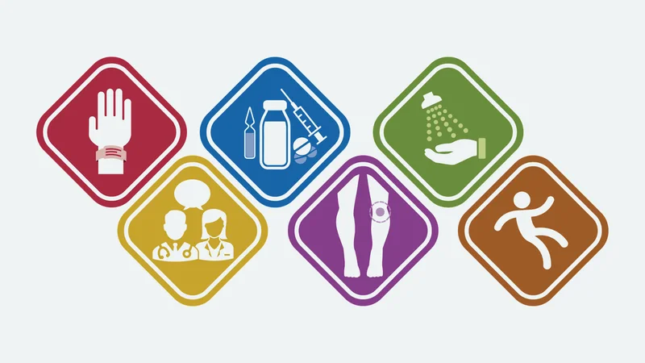

Entendendo as Metas Internacionais de Segurança do Paciente
A segurança do paciente é uma prioridade fundamental em qualquer sistema de saúde. Para enfrentar os desafios e minimizar os riscos, a Joint Commission International (JCI) desenvolveu as Metas Internacionais de Segurança do Paciente. Estas metas visam padronizar práticas que evitam erros e danos durante o atendimento, promovendo um cuidado mais seguro e eficiente. Neste blog, exploraremos as seis principais metas e como elas podem ser implementadas nas instituições de saúde para garantir a segurança e bem-estar dos pacientes.

A Importância das Metas Internacionais de Segurança do Paciente
As Metas Internacionais de Segurança do Paciente desempenham um papel crucial na promoção de um ambiente de cuidado seguro e eficiente. A implementação dessas metas não apenas protege os pacientes contra possíveis danos, mas também fortalece a confiança no sistema de saúde. Ao seguir essas diretrizes, as instituições de saúde podem reduzir significativamente a ocorrência de erros médicos, melhorar a qualidade do atendimento e aumentar a satisfação dos pacientes.
Aplicando as Metas nas Instituições de Saúde
Para que as metas sejam eficazes, é essencial que os profissionais de saúde adotem uma abordagem proativa e colaborativa. Aqui estão algumas estratégias práticas para implementar as Metas Internacionais de Segurança do Paciente nas instituições de saúde:

1. Identificação Correta dos Pacientes
Objetivo: Assegurar que cada paciente seja identificado corretamente para evitar erros. Ações Recomendadas:
- Usar pelo menos dois identificadores (por exemplo, nome completo e data de nascimento) antes de qualquer procedimento ou administração de medicação.
- Confirmar a identidade do paciente antes de transfusões de sangue ou outros procedimentos.
2. Comunicação Eficaz
Objetivo: Melhorar a eficácia da comunicação entre os profissionais de saúde. Ações Recomendadas:
- Implementar procedimentos de verificação de informações críticas, como resultados de exames e prescrições.
- Utilizar o método SBAR (Situação, Background, Avaliação, Recomendação) para transferências de informações.
3. Segurança na Prescrição, Uso e Administração de Medicamentos
Objetivo: Assegurar a segurança no uso de medicamentos. Ações Recomendadas:
- Desenvolver protocolos para medicamentos de alta vigilância.
- Dupla checagem de doses e rotas de administração de medicamentos.
- Educação contínua sobre medicamentos para a equipe de saúde.
4. Cirurgia Segura
Objetivo: Reduzir o risco de cirurgias em local, procedimento ou paciente errado. Ações Recomendadas:
- Implementar a “Pausa para Segurança” antes do início do procedimento cirúrgico.
- Marcar o local da cirurgia de forma visível e duradoura.
- Confirmar todos os detalhes da cirurgia com toda a equipe antes de iniciar.
5. Redução do Risco de Infecções
Objetivo: Reduzir a ocorrência de infecções associadas aos cuidados de saúde. Ações Recomendadas:
- Seguir diretrizes de higiene das mãos.
- Implementar protocolos de controle de infecções para procedimentos invasivos.
- Educar a equipe de saúde sobre práticas de prevenção de infecções.
6. Redução do Risco de Lesões por Quedas
Objetivo: Reduzir o risco de quedas e lesões relacionadas a quedas. Ações Recomendadas:
- Avaliar regularmente o risco de queda dos pacientes.
- Implementar medidas preventivas, como a instalação de barras de apoio e uso de calçados adequados.
- Educar pacientes e familiares sobre a prevenção de quedas.
Essas metas são essenciais para garantir a segurança do paciente e promover a qualidade dos serviços de saúde. Instituições de saúde ao redor do mundo são incentivadas a adotar essas metas e incorporar práticas e protocolos que garantam a segurança dos pacientes em todos os níveis de atendimento.
Implementação e Monitoramento
Para garantir a eficácia dessas metas, é crucial que as instituições de saúde estabeleçam mecanismos de monitoramento e avaliação contínua. Isso pode incluir:
- Auditorias Regulares: Revisão periódica das práticas e procedimentos para assegurar a conformidade com as metas de segurança.
- Feedback e Melhoria Contínua: Recolher feedback da equipe de saúde e dos pacientes para identificar áreas de melhoria e implementar mudanças necessárias.
- Educação e Treinamento: Oferecer programas de treinamento contínuo para a equipe de saúde sobre as melhores práticas de segurança do paciente.
Cultura de Segurança
Desenvolver uma cultura de segurança dentro das instituições de saúde é fundamental para o sucesso das Metas Internacionais de Segurança do Paciente. Isso inclui:
- Encorajamento de Reportes: Incentivar a equipe a relatar incidentes e quase-incidentes sem medo de retaliação.
- Engajamento da Liderança: Os líderes das instituições devem estar comprometidos com a segurança do paciente e apoiar iniciativas e mudanças necessárias.
- Comunicação Aberta: Promover uma comunicação aberta e transparente entre todos os níveis da organização para resolver problemas de segurança de forma eficaz.

As Metas Internacionais de Segurança do Paciente desempenham um papel crucial na promoção de um ambiente de cuidado seguro e eficiente. A implementação dessas metas não apenas protege os pacientes contra possíveis danos, mas também fortalece a confiança no sistema de saúde. Ao seguir essas diretrizes, as instituições de saúde podem reduzir significativamente a ocorrência de erros médicos, melhorar a qualidade do atendimento e aumentar a satisfação dos pacientes.
Aplicando as Metas nas Instituições de Saúde
Para que as metas sejam eficazes, é essencial que os profissionais de saúde adotem uma abordagem proativa e colaborativa.
A implementação das Metas Internacionais de Segurança do Paciente é vital para criar um ambiente de saúde mais seguro e eficiente. Ao adotar essas metas, as instituições de saúde podem reduzir a ocorrência de erros, melhorar a qualidade do atendimento e aumentar a satisfação dos pacientes. Profissionais de saúde bem treinados, engajados e comprometidos com a segurança são fundamentais para o sucesso dessas iniciativas. Investir em educação contínua, promover uma cultura de segurança e utilizar tecnologias de suporte são passos essenciais para alcançar um atendimento de excelência e garantir a segurança de todos os pacientes.

Aperfeiçoe suas habilidades e aprenda as melhores práticas em segurança do paciente! Inscreva-se no nosso curso e obtenha um certificado de conclusão.
São módulos completos abordando conceitos fundamentais, contexto global e nacional, cultura de segurança, gestão de riscos, e muito mais!
Garanta sua vaga e transforme a qualidade do cuidado em sua instituição!
Através deste curso abrangente, você terá a oportunidade de:
- Dominar os principais conceitos relacionados à Segurança do Paciente, construindo uma base sólida de conhecimento sobre o tema.
- Mergulhar na linha do tempo da Segurança do Paciente, compreendendo sua evolução histórica e os marcos que moldaram a área.
- Desvendar as principais estratégias para a implantação e gestão da cultura de segurança em diferentes contextos de saúde.
- Explorar o cenário nacional da Segurança do Paciente, conhecendo os desafios e as oportunidades que o Brasil enfrenta nesse campo.
- Aprofundar-se na estruturação do Núcleo de Segurança do Paciente, entendendo suas funções e responsabilidades essenciais.
- Analisar os fatores contribuintes para eventos adversos, desenvolvendo habilidades para identificá-los e mitigá-los.
- Colocar-se na perspectiva do paciente, compreendendo suas necessidades e expectativas em relação à segurança.
- Dominar o gerenciamento do fluxo de notificações de eventos adversos, garantindo a efetividade do processo.
- Empregar ferramentas para análise de eventos e oportunidades de melhoria, promovendo a cultura da qualidade contínua.
Juntos, podemos construir um futuro onde a saúde de qualidade seja acessível a todos!

Traga sua Equipe e aproveite Descontos Especiais para grupos de 4 ou mais! 🚀 Personalize este curso para sua Organização com nossa modalidade “In Company” 🏥.
Converse com nosso time!
👩❤️👨 Relacionamento com o Cliente 📲 19-99777-3084, clique aqui!
📞 Fale com nossa Equipe Técnica pelo Telefone ou WhatsApp ☎ 19-35971445.
Ou entre em contato: [email protected]